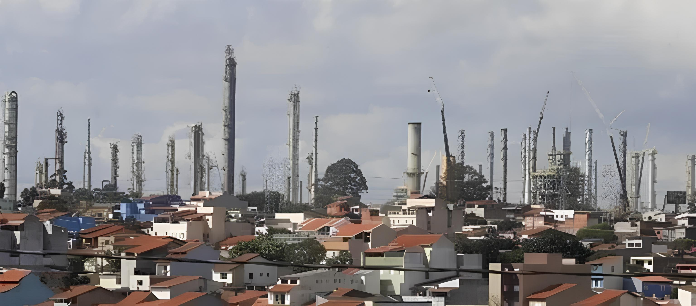

Elas estabelecem padrões e diretrizes para proteger o meio ambiente e a saúde pública, abrangendo áreas como controle de poluição do ar e da água, gestão de resíduos, conservação da biodiversidade e proteção de ecossistemas sensíveis. Na teoria, as empresas são obrigadas a cumprir essas leis e regulamentos ambientais, e são sujeitas a fiscalizações regulares por parte das autoridades competentes para garantir a conformidade, incluindo a obtenção de licenças ambientais para operar, relatórios periódicos de monitoramento ambiental e a implementação de medidas corretivas em caso de não conformidade. Porém, a eficácia da aplicação e fiscalização das leis ambientais pode variar, e casos de não conformidade e infrações podem ocorrer. Em alguns casos, pode haver lacunas na legislação, falta de recursos para fiscalização adequada ou desafios na aplicação consistente das penalidades. É importante ressaltar que o cumprimento das leis ambientais não é apenas uma questão de conformidade legal, mas também uma responsabilidade ética e social das empresas para com o meio ambiente e as comunidades locais.
Polo Petroquímico Capuava
O Polo Petroquímico de Capuava teve sua construção iniciada na década de 1960, período em que o Brasil estava passando por um intenso processo de industrialização. As primeiras indústrias petroquímicas começaram a ser instaladas na região de Santo André, São Paulo, atraídas pela disponibilidade de matéria-prima proveniente do petróleo proveniente da região serrana de São Paulo, bem como pela localização estratégica próxima a importantes centros consumidores e de fácil escoamento, devido à proximidade da mais importante via de acesso à região dos portos, a rodovia Anchieta (sp-150). O marco mais importante nesse processo foi a inauguração da Refinaria de Capuava, em 1961, pela Petrobras. Essa refinaria foi o ponto de partida para o desenvolvimento do polo petroquímico na região, fornecendo os insumos básicos para a produção de uma variedade de produtos químicos e petroquímicos Plásticos: O polo produz uma variedade de polímeros plásticos, como polietileno, polipropileno, poliestireno, PVC (cloreto de polivinila) e PET (tereftalato de polietileno).
Impactos
Meio Ambiente:No Polo, uma série de problemáticas complexas requerem atenção detalhada e soluções estratégicas para garantir o desenvolvimento sustentável e a segurança de todas as partes envolvidas. Uma das questões mais latentes é a correlacionada aos impactos ambientais decorrentes das operações industriais. Emissões de gases de efeito estufa, poluição do ar, da água e do solo representam ameaças significativas para a saúde humana e a biodiversidade local. Esses poluentes podem ter efeitos adversos a longo prazo, tanto para os trabalhadores do polo quanto para as comunidades vizinhas. Além disso, a segurança e saúde ocupacional dos trabalhadores são uma preocupação essencial. As operações industriais envolvem riscos significativos, como exposição a produtos químicos perigosos, riscos de incêndios e explosões, e condições de trabalho desafiadoras. A implementação de medidas de segurança robustas e programas de saúde ocupacional é fundamental para mitigar esses riscos e garantir um ambiente de trabalho seguro e saudável para todos os funcionários. As principais ameaças ambientais e de saúde associadas ao Polo Petroquímico de Capuava são a contaminação do solo e da água, a exposição a poluentes atmosféricos e a presença de "manchas ácidas" no ambiente. A contaminação do solo e da água é uma preocupação significativa, como mostra um estudo epidemiológico realizado na região do polo petroquímico de Capuava, que investigou a situação da TH (toluene, xilene e hexano) na região. Além disso, a proximidade do polo industrial com a estação Santo André-Capuava pode contribuir para uma maior contaminação do ar e da água com metais pesados. A exposição a poluentes atmosféricos também é uma ameaça à saúde, especialmente em áreas próximas ao polo petroquímico. A presença de "manchas ácidas" no ambiente pode causar estresse na vegetação e na fauna local, além de afetar a qualidade do ar e da água.
Medidas para mitigar os impactos
Os resultados da pesquisa não fornecem informações específicas sobre as medidas adotadas por cada empresa no Polo Petroquímico de Capuava para lidar com os riscos ambientais e de saúde. As informações fornecidas estão relacionadas à definição do porte de uma empresa, que é determinado por fatores como receita, número de funcionários e capacidade de produção. No Brasil, existem diferentes modelos para classificar o porte das empresas, e a definição do porte de uma empresa é importante para fins de tributação e financiamento. Por exemplo, o Banco Nacional de Desenvolvimento Econômico e Social (BNDES) classifica o porte de uma empresa com base na receita, sendo uma empresa de porte médio aquela com receita entre R$ 16 milhões e R$ 90 milhões. No contexto do Polo Petroquímico de Capuava, as empresas que operam lá podem ter implementado medidas para minimizar os riscos ambientais e de saúde, como monitoramento de emissões, implementação de protocolos de segurança e investimento em tecnologias de produção mais limpas. No entanto, as medidas específicas adotadas por cada empresa não são fornecidas nos resultados da pesquisa. As empresas que operam no Polo estão sujeitas a regulamentações ambientais rigorosas estabelecidas pelo governo federal, estadual e municipal, além de órgãos reguladores específicos do setor. Dentre esses órgãos, estão:
|

IBAMA:
é responsável pela proteção do meio ambiente e pela aplicação das leis ambientais federais. Ele emite licenças ambientais, realiza fiscalizações e impõe penalidades em casos de infração ambiental. CETESB (Companhia Ambiental do Estado de São Paulo): A CETESB é o órgão ambiental do estado de São Paulo e tem a responsabilidade de fiscalizar e regular as atividades que impactam o meio ambiente no estado. Ela emite licenças ambientais, monitora a qualidade do ar e da água e realiza ações de controle da poluição. ANP (Agência Nacional do Petróleo, Gás Natural e Biocombustíveis): A ANP regula a indústria de petróleo, gás natural e biocombustíveis no Brasil. Ela emite autorizações para operações de exploração e produção de petróleo e gás, supervisiona o mercado de combustíveis e promove a segurança e a eficiência do setor. Ministério do Trabalho e Emprego: Responsável por fiscalizar as condições de trabalho e a segurança dos trabalhadores, o Ministério do Trabalho e Emprego atua para garantir o cumprimento das normas trabalhistas e prevenir acidentes ocupacionais. |